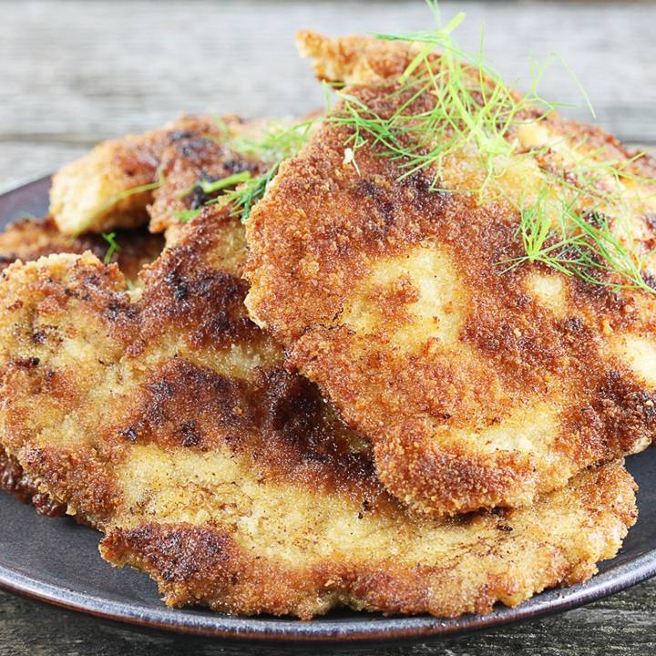
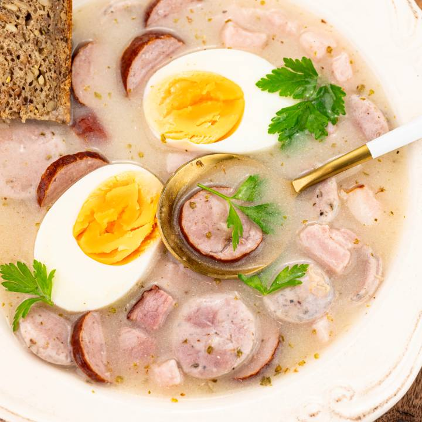
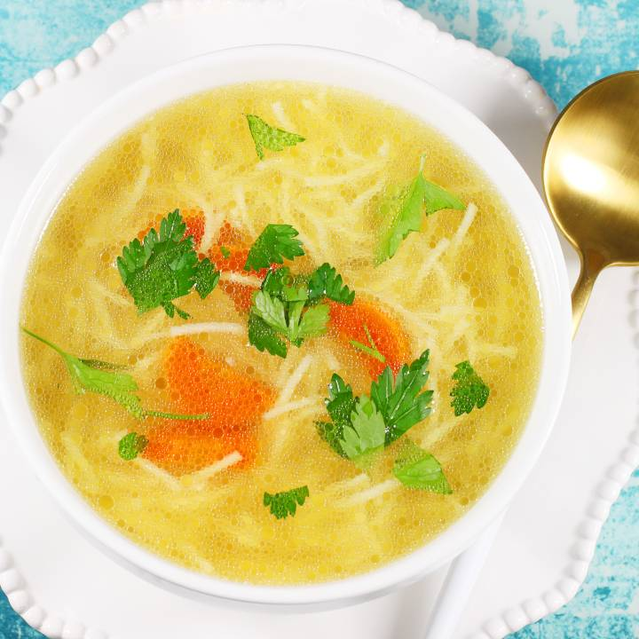
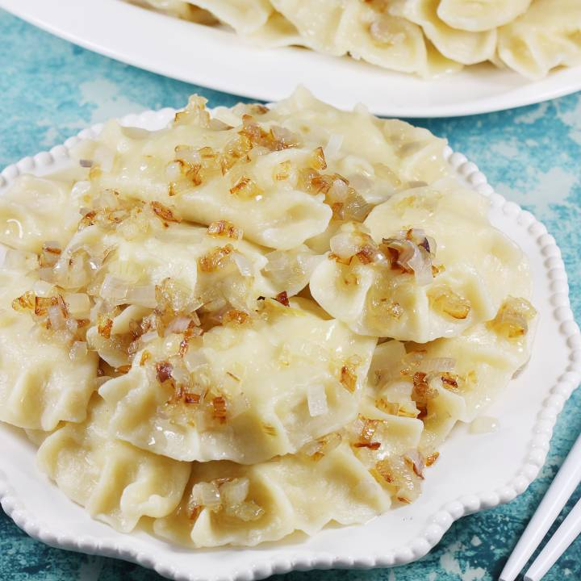

Witaj w kulinarnej przygodzie!
Gotuj z nami – Smacznie, domowo, po polsku!
Szukasz sprawdzonych przepisów na pyszne, domowe dania? A może chcesz odkryć sekrety kuchni polskiej, które znały nasze babcie? Dobrze trafiłeś!
- Tradycyjne przepisy – od schabowego po pierogi i zupy, które rozgrzewają serce.
- Porady kulinarne – jak korzystać z pałeczek oraz w jaki sposób dobrze ubijać białka.
- Proste instrukcje – krok po kroku, nawet jeśli dopiero zaczynasz gotować.
- Dania na każdą okazję – święta, rodzinne obiady, szybkie kolacje czy domowe wypieki.
Nie musisz być szefem kuchni, by gotować dobrze i z sercem. Wystarczy trochę chęci i… dobra strona z przepisami – właśnie taka jak nasza!
Nasze przepisy

Schabowy

Żurek

Rosół

Pierogi ruskie